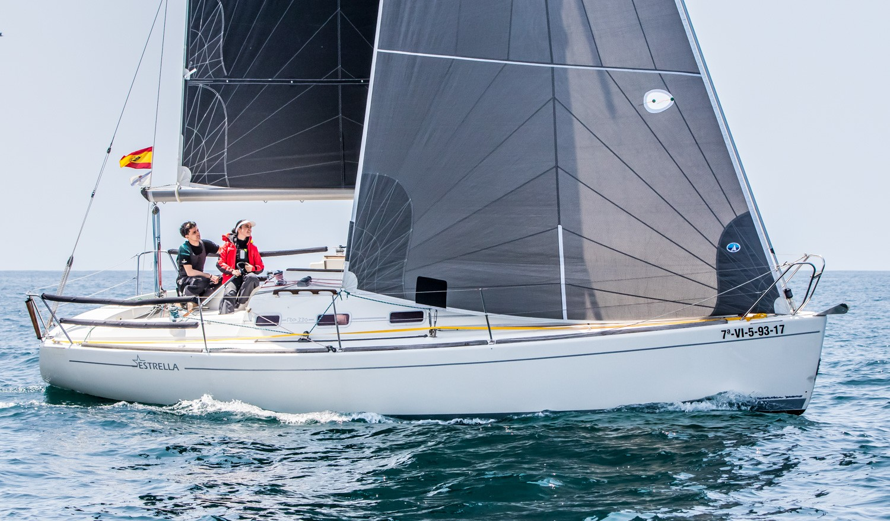
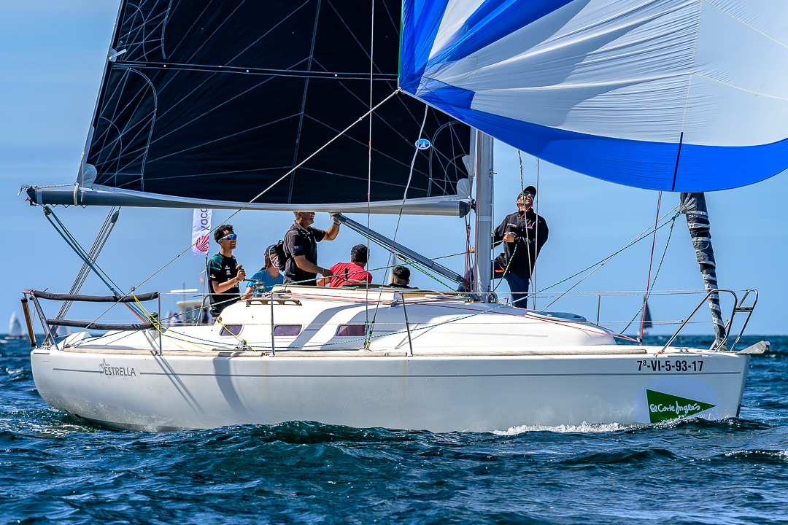
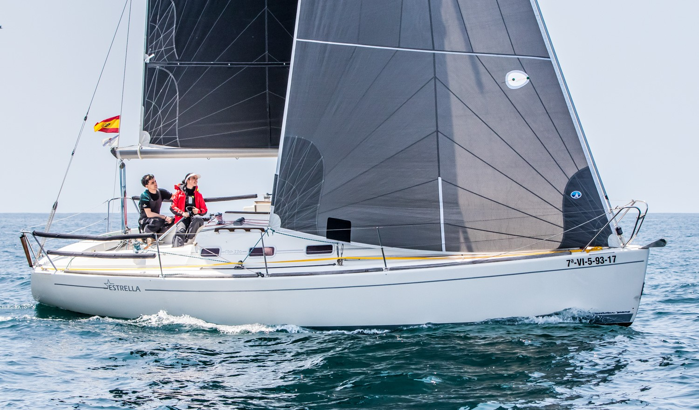
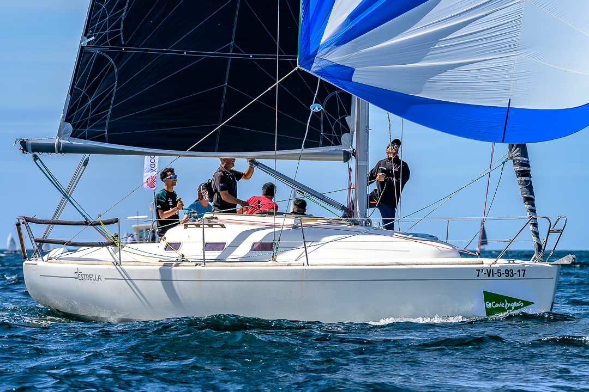

Ro330 WORLD CLASS
El Barco
El Ro330 es uno de los diseños más exitosos de la vela española, con numerosas unidades en activo y una presencia especialmente fuerte en Galicia y Barcelona. Su amplia difusión —sobre todo en la versión de quilla corta— ha impulsado la creación de una clase propia para unificar la competición. Versátil, equilibrado y fiable, el Ro330 funciona igual de bien en crucero que en regata, lo que lo convierte en un barco accesible y muy competitivo.
Diseño y Especificaciones
| Diseñador | Barracuda Yacht Design (Íñigo Toledo) |
| Astillero | Ronautica Yatchs |
| Eslora (LOA) | [9.50 m] |
| Manga (Beam) | [3.25 m] |
| Calado (Draft) | [1.66 m] |
| Desplazamiento | [3800 kg] |
| Año | [2000] |

 



Reglas de la Clase
La Clase Ro330 reúne barcos con pequeñas diferencias entre series y configuraciones, por lo que no es posible aplicar un reglamento estrictamente monotipo. Para permitir que la mayoría de unidades existentes puedan competir juntas, la clase adopta normas laxas pero controladas, lo suficientemente amplias como para incluir a todos, pero no tanto como para que aparezcan configuraciones que rompan el equilibrio deportivo. La verificación técnica se simplifica utilizando únicamente el certificado ORC vigente —Club o Internacional— como referencia común para todos los barcos.
Contacto
[¿Interesado en unirte a la clase, organizar un evento o para consultas de prensa? Rellena el formulario y la secretaría de la clase se pondrá en contacto contigo.]